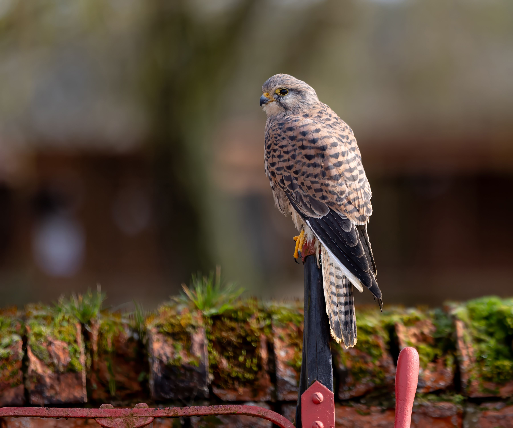

The Common Kestrel is a small falcon famous for hovering almost motionless while searching the ground for prey. It has long, pointed wings and a long tail, with males generally showing a grey head and tail while females have more extensively barred brown plumage. Kestrels mainly hunt small mammals such as voles but also take insects, reptiles, and small birds. They occur in open habitats including farmland, grassland, scrub, cliffs, and urban areas where suitable hunting grounds and nesting sites are available. Compared with the larger and more powerful Peregrine Falcon, the Common Kestrel is slimmer, smaller, and more specialized for hovering and hunting small ground prey. It also differs from the Merlin by its longer tail, broader wings, and characteristic hovering behaviour. Kestrels commonly use cavities, buildings, cliffs, and old nests rather than constructing a conventional nest of their own.